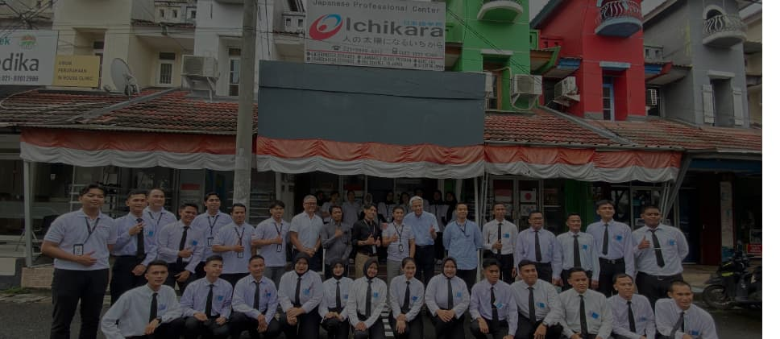

会社概要 · 一花株式会社
Tentang Kami
Menjembatani Indonesia dan Jepang melalui bahasa, kepercayaan, dan kompetensi selama lebih dari satu dekade.
Kisah PT. Ichikara
PT. Ichikara berdiri dengan satu misi sederhana namun kuat: menghilangkan hambatan bahasa yang selama ini menghalangi kolaborasi antara Indonesia dan Jepang.
Selama lebih dari satu dekade, kami telah mendampingi perusahaan manufaktur, institusi pendidikan, dan individu dalam meraih peluang nyata di pasar Jepang, mulai dari penerjemahan kontrak bernilai miliaran rupiah hingga mempersiapkan tenaga kerja Indonesia untuk bekerja di negeri sakura.
一花について
一花は、インドネシアと日本の間の言語の壁をなくすというシンプルながらも力強いミッションのもとに設立されました。
10年以上にわたり、製造業、教育機関、そして個人のお客様をサポートし、日本市場での真の機会実現をお手伝いしてきました。
「一花」という名前は日本語で「一輪の花」を意味し、すべてのクライアントが個性あふれる存在であり、パーソナルで正確、かつ誠実なサービスを受ける権利があるという私たちの信念を象徴しています。
Nilai-Nilai Kami
Prinsip yang memandu setiap pekerjaan dan keputusan kami.
Akurasi
Setiap kata dipilih dengan cermat. Tidak ada ruang untuk ketidakakuratan dalam dunia bisnis dan hukum.
Kepercayaan
Klien mempercayakan dokumen sensitif kepada kami. Kepercayaan itu kami jaga dengan sepenuh hati.
Konteks Budaya
Bahasa bukan sekadar kata-kata. Kami memahami nuansa budaya yang membuat komunikasi benar-benar efektif.
Pertumbuhan
Sukses klien adalah sukses kami. Kami terus berkembang agar selalu relevan dengan kebutuhan industri.
Layanan Kami
Empat pilar layanan yang menjadi keunggulan PT. Ichikara.
Mari Berkolaborasi
Hubungi kami untuk berdiskusi tentang kebutuhan layanan bahasa Jepang Anda.
Hubungi via WhatsApp